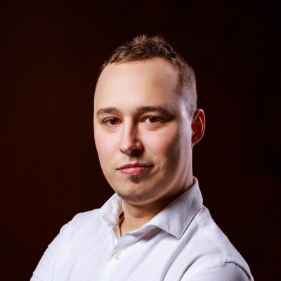

MP
Skaluję systemy i eliminuję
dług technologiczny w PHP & Symfony
Jako freelancer i Tech Lead wspieram firmy w czystej architekturze, refaktoryzacji trudnego legacy code, komunikacji asynchronicznej oraz bezpiecznych migracjach systemów.
Zakres Usług B2B
Konkretne obszary techniczne, w których wspieram zespoły deweloperskie
<Backend /> Architektura
Projektowanie skalowalnych backendów w Symfony, implementacja czystej architektury, API Platform oraz bezpiecznych interfejsów REST.
⚡ Refaktoryzacja Legacy
Audyty kodu, wydzielanie modułów ze spaghetti code oraz bezpieczne migracje starszych wersji PHP i Symfony do najnowszych wydań.
⛁ Kolejki, SQL & Docker
Asynchroniczne przetwarzanie procesów za pomocą Symfony Messenger, optymalizacja powolnych zapytań SQL i konteneryzacja środowisk.
Wybrane Wdrożenia
Projekty produkcyjne potwierdzające praktyczne doświadczenie inżynierskie
Taverna Planszowa
Autorski, kompleksowy portal dedykowany pasjonatom gier planszowych. Wyposażony w relacyjną bazę danych, wyszukiwarkę i moduły społecznościowe.
Odwiedź tavernaplanszowa.pl ↗Adexion Platform
Aplikacja webowa zoptymalizowana pod kątem maksymalnej wydajności i bezobsługowego skalowania w architekturze chmurowej.
Zobacz aplikację ↗Opinie z Google Maps
Średnia ocen 5.0 ★ na profilu firmowym
„Świetny programista, usługi na wysokim poziomie.”
„Wysokie kompetencje techniczne, solidne wsparcie przy rozwoju oprogramowania i bezproblemowa komunikacja.”
Porozmawiajmy o współpracy
Szukasz wsparcia przy refaktoryzacji, nowym module w Symfony czy optymalizacji backendu?